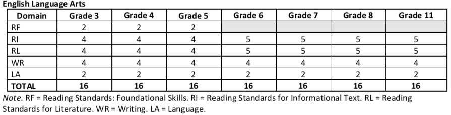

3 Technical Quality: Validity
3.1 3.1 Overall Validity, Including Validity Based on Content
As elaborated by Messick (1989), the validity argument involves a claim with evidence evaluated to make a judgment. Three essential components of assessment systems are necessary: (a) constructs (what to measure), (b) the assessment instruments and processes (approaches to measurement), and (c) use of the test results (for specific populations). Validation is a judgment call on the degree to which each of these components is clearly defined and adequately implemented.
Validity is a unitary concept with multifaceted processes of reasoning about a desired interpretation of test scores and subsequent uses of these test scores. In this process, we want answers for two important questions. Regardless of whether the students tested have disabilities, the questions are identical: (1) How valid is our interpretation of a student’s test score? and (2) How valid is it to use these scores in an accountability system? Validity evidence may be documented at both the item and total test levels. We use the Standards (AERA et al., 2014) in documenting evidence on content coverage, response processes, internal structure, and relations to other variables. This document follows the essential data requirements of the federal government as needed in the peer review process. The critical elements highlighted in Section 4 in that document (with examples of acceptable evidence) include (a) academic content standards, (b) academic achievement standards, (c) a statewide assessment system, (d) reliability, (e) validity, and (f) other dimensions of technical quality.
In this technical report, data are presented to support the claim that Oregon’s AA-AAAS provides the state technically adequate student performance data to ascertain proficiency on grade level state content standards for students with significant cognitive disabilities - which is its defined purpose. The AA-AAAS are linked to grade level academic content, generate reliable outcomes at the test level, include all students, have a cogent internal structure, and fit within a network of relations within and across various dimensions of content related to and relevant for making proficiency decisions. Sample items that convey the design and sample content of ORExt items are provided in Appendix 2.2.3.
The assessments are administered and scored in a standardized manner. Assessors who administer the ORExt are trained to provide the necessary level of support for appropriate test administration on an item-by-item basis. There are four levels of support outlined in training: full physical support, partial physical support, prompted support, and no support. Items were designed to document students’ skill and knowledge on grade level academic content standards, with the level of support provided designed not to interfere with the construct being measured. Only one test administration type is used for the ORExt, patterned after the former Scaffold version of the assessment. Assessors administer the prompt and if the student does not respond, the Assessor reads a directive statement designed to focus the student’s attention upon the test item and then repeats the prompt. If the student still does not respond, the Assessor repeats the prompt as needed and otherwise scores the item as incorrect and moves on to the next item. Training documentation is provided in Appendices 2.3B.1-2.3B.8.
Given the content-related evidence that we present related to test development, alignment, training, administration, scoring, the reliability information reflected by adequate coefficients for tests, and, finally, the relation of tests across subject areas (providing criterion-related evidence), we conclude that the alternate assessment judged against alternate achievement standards allows valid inferences to be made on state accountability proficiency standards.
3.1.1 3.1A Alignment Between AA-AAAS and Academic Content Standards
Our foundation of validity evidence from content coverage for the ORExt comes in the form of test specifications (see Appendix 2.1) and test blueprints (see Appendix 2.1B). Among other things, the Standards (AERA et al., 2014) suggest specifications should “define the content of the test, the proposed test length, the item formats…” (Standard 4.2, p. 85).
All items are linked to grade level standards and a prototype was developed using principles of universal design with traditional, content-referenced multiple-choice item writing techniques. The most important component in these initial steps addressed language complexity and access to students using both receptive, as well as expressive, communication. Additionally, both content breadth and depth were addressed. We developed one test form for the ORExt that utilizes a scaffold approach. This approach allows for students with very limited attention to access test content, while the supports are not utilized for students who do not need this support.
We developed the test iteratively by developing items (see Appendix 2.2.1, which conveys our item writer training materials), piloting them, reviewing them, and editing successive drafts. We used a combination of existing panels of veteran teachers who have worked with the Oregon Department of Education (ODE) in various advising roles on testing content in general and special education, using the same processes and criteria, as well as the introduction of newer teachers who are qualified as we proceed to remain relevant. Behavioral Research and Teaching (BRT) personnel conducted the internal reviews of content. After the internal development of prototype items, all reviews then involved Oregon content and special education experts with significant training and K-12 classroom experience.
The ORExt incorporates continuous improvement into its test design via field-testing in all content areas on an annual basis, with an average of 25% new items. These items are compared to operational items based on item functioning and test design factors, generating data used to replace items on an annual basis, incorporating the new items that fill a needed gap with regard to categorical concurrence, or provide for a wider range of functioning with regard to complexity levels: low - medium - high, comparable to Webb’s DOK (see Section 2.2).
BRT employed a multi-stage development process in 2014-15 to ensure that test items were linked to relevant content standards, were accessible for students with significant cognitive disabilities, and that any perceived item biases were eliminated. The item review process included 51 reviewers with an average of 22 years of experience in education. The ORExt assessments have been determined to demonstrate strong linkage to grade level academic content, overall. Full documentation of the initial 2014 linkage study and a new, independent alignment study conducted in spring, 2017 is provided in Appendix 3.1A. Based on student performance from the 2016-2017 testing year, new and Grade 7 Math field test items were written in fall 2017.
The summary section of the independent alignment study report states that, “Oregon’s Extended Assessments (ORExt) in English Language Arts, Mathematics, and Science were evaluated in a low-complexity alignment study conducted in Spring of 2017. Averages of reviewer professional judgments over five separate evaluations were gathered, reviewed, and interpreted in the pages that follow. In the three evaluations that involved determining the relationship between standards and items, reviewers identified sufficient to strong relationships among assessment components in all grades and all subject areas. In the two evaluations involving Achievement Level Descriptors, reviewers identified thirty instances of sufficient to strong relationships out of thirty-four possible relationship opportunities resulting in an overall affirmed relationship with areas for refinements identified.”
Because the assessments demonstrate sufficient to strong linkage to Oregon’s general education content standards and descriptive statistics demonstrate that each content area assessment is functioning as intended, it is appropriate to deduce that these standards define the expectations that are being measured by the Oregon Extended assessments.
The Oregon Extended assessments yield scores that reflect the full range of achievement implied by Oregon’s alternate achievement standards. Evidence of this claim is found in the standard setting documentation submitted in Section 6.2. Standards were set for all subject areas on June 15-17, 2015. Standards included achievement level descriptors and cut scores, which define Oregon’s new alternate achievement standards (AAS). The State Board of Education officially adopted the AAS on June 25, 2015.
3.1.2 3.1B AA-AAAS Linkage to General Content Standards
Results of the analysis of the linkage of the new Essentialized Assessment Frameworks, (EAF), composed of Essentialized Standards (EsSt), to grade level CCSS in English language arts and mathematics and linked to ORSci and NGSS in science, are presented in Section 3.1A. The claim is that the EsSt are sufficiently linked to grade level standards, while the ORExt items are aligned to the EsSt. In addition to presenting linkage information between grade level content standards and the EsSt, the linkage study presents alignment information related to the items on the new ORExt in comparison to the EsSt. Extended assessments have been determined to link sufficiently to grade level academic content standards. Field test items are added each year based on item alignment to standards.
The Oregon Extended assessments link to grade level academic content, as reflected in the item development process. Oregon also had each operational item used on the Oregon Extended assessment evaluated for alignment as part of two comprehensive linkage studies, one performed in 2014 and an independent alignment study performed in 2017 (see Section 3.1A). The professional reviewers in an internal study in 2014 and an independent study in spring 2017 included both special and general education experts, with content knowledge and experience in addition to special education expertise.
According to the independent linkage study report, the spring 2017 review was conducted by expert reviewers with professional backgrounds in either Special Education (the population), Assessment, or in Oregon’s adopted content standards. Reviewers were assigned to review grade-level items relative to their experience and expertise. In all, 39 reviewers participated. Thirty-four (34) participated in all 5 evaluations: thirteen (13), for the English Language Arts review, fifteen (15) for the Mathematics review, and six (6) for the Science review. All participants were assigned to at least one specific content area as shown in Table 1. Note: Four individuals were assigned to two areas of review. The thirty-nine individuals who participated in the study had a robust legacy of experience in the field and in the state. Participants represented 25 unique school districts across the state representing both urban and rural perspectives. All 39 of the individuals participating in the study held current teaching licenses. Two individuals also held administrative licenses. Years of experience in their area ranged from 3 - 30 years of experience with an average of 17 years of experience. (Mode = 11 years, Median = 16 years). One individual indicated 50 years of experience in the field. Three of the 39 individuals held a Bachelor’s degree only. Thirty-six held a Bachelor’s degree and at least one Master’s degree. Two held a Bachelor’s degree, at least one Master’s degree, and a doctoral degree. Fourteen (36%) of the individuals identified as experts in a specific Content area and 25 (64%) of the individuals identified Special education as their primary area of expertise.
These skilled reviewers were trained by synchronous webinars on linkage/alignment, as well as item depth, breadth, and complexity and then completed their ratings online via BRT’s Distributed Item Review (DIR) website and on Excel spreadsheets shared with the researcher electronically (see Appendix 3.1B for an overview). Mock linkage ratings were conducted in order to address questions and ensure appropriate calibration. Reviewers rated each essentialized standard on a 3-point scale (0 = no link, 1= sufficient link, 2= strong link) as it related to the standard the test developers had defined for that essentialized standard. Items were evaluated, in turn, based upon their alignment to the essentialized standard on a 3-point scale (0 = insufficient alignment, 1 = sufficient alignment, 2 = strong alignment). When averaged across reviewers, 1.00-1.29 was considered in the low range, 1.30 - 1.69 was sufficient, and 1.70 - 2.0 was strong. Additional comment was requested for any essentialized standard or item whose linkage was rated 0.
Overall, the 2017 independent alignment study concludes that: “First, reviewers were asked to conduct an affirmational review of the rationale used by test developers to omit certain content standards. This finding was used to infer that the final standards selected for inclusion or omission in Oregon’s Extended Assessment were chosen rationally and that the final scope of content standards can be considered justifiable for the population for the subject area. Conclusion: This review, with a lowest average rate of .82 (on a scale of 1), permits the inference: the scope of the standards selected for translation to Essentialized Standards were rationally selected. None of the standards de-selected (for inaccessibility or for being covered elsewhere) were strongly identified for re- inclusion, nor were identified as a critical hole for this population of students. Second, reviewers were asked to identify the strength of the link between the source standard and the Essentialized Standard. This finding was used to infer that the process undertaken to essentialize a given Source Standard did not fundamentally or critically alter the knowledge or skill set intended by the source standard for this population of students (further confirming that the content selected for assessment is comparable). Conclusion:This review, with a range of 1.5 - 1.9 (on a scale of 2) permits the inference: the Essentialized Standards were found to link sufficiently to the source standards on average beyond the”sufficient” average of 1.0. Third, reviewers were asked to identify the strength of the alignment between the Essentialized Standards and the items and to review the items developed using the Essentialized Standards for bias, and accessibility. The finding from this review was used to infer that the items written for this grade and subject area (using these Essentialized Standards) were adequately linked to the Essentialized Standards, were free from bias, and were accessible to students with significant cognitive disabilities. Conclusion: The alignment review (1.32 - 1.89), accessibility review (.67 - 1.0), and freedom from bias review (.65 - 1.0) all permit the inference that the test items indicate a relationship with the source standards, the test items are not overly biased towards or against any particular group of individuals, and the test items are written such that the content and intent can be accessed by students with the most significant cognitive disabilities. (**Note: this range was skewed by feedback from one reviewer –ELA-Grade 3 - whose comments were noted in this study. Removing that individual’s comments would result in a range of .90 - 1.0 accessibility range and .89 - 1.0 freedom from bias range respectively.) Fourth, reviewers were asked to review the statements used to describe student achievement on the test (the Achievement Level Descriptors) and their alignment to the Essentialized Standards that the students were tested on. The finding from this review was used to infer that the skills and achievements described by the Achievement Level Descriptors for each subject and grade level are aligned with the content standard being measured. Conclusion: The reviews ranging from .68* - 1.0 permit the inference that the descriptions made regarding student skillset are an accurate reflection of the standards from which the assessment was developed at all three levels evaluated. (*One outlier for ELA-Grade 4 provided a review of a .52 average). Fifth, and finally, reviewers were asked to review the alignment of the Achievement Level Descriptors to the items. The finding from this review was used to infer that each item in the developed assessment(s) was appropriately aligned to its associated Achievement Level Descriptor (further confirming that decisions made using this test were aligned with the intent of the source standard). Conclusion: Fourteen of the seventeen grade-level reviews resulted in an average reviewer range of .67 - 1.0 indicating an appropriate alignment between ALDs and the items as written. This review permits the inference that, overall, the Achievement Level Descriptors are accurate reflections of the items. In three instances (Mathematics-Grades 3 and 4, and ELA-Grade 8) the average alignment by reviewer was .5 (indicating that one of the two individuals in that category did not agree that the items and ALDs were aligned).”
3.2 3.2 Validity Based on Cognitive Processes
Evidence of content coverage is concerned with judgments about “the extent to which the content domain of a test represents the domain defined in the test specifications” (AERA et al., 2014, Standard 4.12, p. 89). As a whole, the ORExt is comprised of sets of items that sample student performance on the intended domains. The expectation is that the items cover the full range of intended domains, with a sufficient number of items so that scores credibly represent student knowledge and skills in those areas. Without a sufficient number of items, the potential exists for a validity threat due to construct under-representation (Messick, 1989).
The ORExt assessment is built upon a variety of items that address a wide range of performance expectations rooted in the CCSS, NGSS, and ORSci content standards. The challenge built into the test design is based first upon the content within each standard in English language arts, mathematics, and science. That content is RDBC in a manner that is verified by Oregon general and special education teachers to develop assessment targets that are appropriate for students with the most significant cognitive disabilities. Our assessments utilize universal design principles in order to include all students in the assessment process, while effectively challenging the higher performing students. For students who have very limited to no communication and are unable to access even the most accessible items on the ORExt, an Oregon Observational Rating Assessment (ORora) was first implemented in 2015-16. The ORora is completed by teachers and documents the student’s level of communication complexity (expressive and receptive), as well as level of independence in the domains of attention/joint attention and mathematics. A complete report of ORora results from 2017-18 is provided in Appendix 5.1D.
Fifty-one reviewers analyzed all ORExt items for bias, sensitivity, accessibility to the student population, and alignment to the Essentialized Standards. A total of 21 reviewers were involved in the English language arts item reviews. An additional 21 reviewers were involved in the Mathematics item reviews. Science employed nine reviewers. Reviewers were organized into grade level teams of two special educators and one content specialist.
Substantive evidence that has been documented suggests that the ORExt items are tapping the intended cognitive processes and that the items are at the appropriate grade level through the linkage/alignment studies documented above, including reviews of linkage, content coverage, and depth of knowledge.
3.3 3.3 Validity Based on Internal Structure (Content and Function)
The Oregon Extended assessments reflect patterns of emphasis that are supported by Oregon educators as indicated by the following three tables that highlight the balance of standard representation by grade level for English language arts, mathematics, and science on the ORExt. The representation ratios can be calculated by dividing the standards by the total within each respective column. For example, in Grade 3 Reading, approximately 25% of the items are in the Reading Standards for Literature domain, as that domain has 4 written Essentialized Standards (EsSt) out of the total of 16 (4/16 = 25%).
The test blue prints below directly correspond to the number of ES written in each domain within the Essentialized Assessment Frameworks (EAF) spreadsheets. There are additional grade level standards addressed by the EsSt, as some EsSt link to multiple grade level content standards. However, the blueprints below reflect only the written EsSt and are thus an underrepresentation of the breadth of grade level content addressed by the ORExt.
 
The primary purpose of the ORExt assessment is to yield technically adequate performance data on grade level state content standards for students with significant cognitive disabilities in English language arts, mathematics, and science at the test level. All scoring and reporting structures mirror this design and have been shown to be reliable measures at the test level (see Section 4.1). The process of addressing any gaps or weaknesses in the system is accomplished via field-testing (see Section 3.1A).
3.3.1 Point Measure Correlations
Distributions of point measure correlations and outfit mean square statistics for operational items are provided below, by content area and grade. Point measure correlations display how the item scores correlate with the latent overall score, while outfit mean square statistics closer to 1.0 denote minimal distortion of the measurement system. All items included in the 2017-18 operational assessment are represented. Point measure correlations ranged from 0.34 to 0.74 in ELA, 0.12 to 0.71 in Math, to 0.25 to 0.74 in Science. All data visualizations were conducted with ggplot2 in the tidyverse package (Wickham et al. 2019).
3.3.1.1 Outfit Mean Square Distributions
Outfit mean square values below 1.0 demonstrate that values are too predictable and perhaps redundant, while values above 1.0 indicate unpredictability. Items above 2.0 are deemed insufficient for measurement purposes and flagged for replacement. While most OMS values in ELA were between 0.5 and 1.5, one item in each Grade 6, 7, and 11 was above 2.0 and will be removed. One item in Grade 7 Math and one item in Grade 11 Science will also be removed.
3.3.2 Annual Measureable Objectives Frequencies & Percentages
Annual Measurable Objective (AMO) calculations were conducted based upon student performance on the ORExt tied to the vertical scale using Rasch modeling. Overall results are largely consistent with 2016-17, with approximately 50% of students with significant cognitive disabilities achieving proficiency across grades and content areas. The data visualizations presented below were conducted with ggplot2 in the tidyverse suite of packages (Wickham et al. 2019).
Some concerns are noted in mathematics, where relatively higher percentages of students are scoring at Level 1 and very few at Level 2. However, this finding is consistent with the range of possible scores, where Level 2 in some cases only has two possible scale score points (e.g., Grade 7, where Level 2 exists between 207-208 scaled scores). The addition of 1-2 low complexity items per assessment will be effected in mathematics to address this concern, as well.
3.4 3.4 Validity Based on Relations to Other Variables
Perhaps the best model for understanding criterion-related evidence comes from Campbell and Fiske (1959) in their description of the multi-trait, multi-method analysis [we translate the term ‘trait’ to mean ‘skill’]. In this process (several) different traits are measured using (several) different methods to provide a correlation matrix that should reflect specific patterns supportive of the claim being made (that is, provide positive validation evidence). Sometimes, these various measures are of the same or similar skills, abilities, or traits, and other times they are of different skills, abilities, or traits. We present data that quite consistently reflect higher relations among items within an academic subject than between academic subjects. We also present data in which performance on items is totaled within categories of disability, expecting relations that would reflect appropriate differences (see Tindal, McDonald, Tedesco, Glasgow, Almond, Crawford, & Hollenbeck, 2003).
3.4.1 Convergent and Divergent Validity Documentation
Criterion validity information is difficult to document with AA-AAAS, as most SWSCD do not participate in any standardized assessment outside of the ORExt and/or ORora in Oregon. Divergent validity evidence is garnered via comparisons of ORExt results to ORora outcomes shows that students whose ORExt assessments are discontinued exhibit serious limitations in attention, basic math skills, and receptive and expressive communication skills. The median ORExt ELA score for SWSCD who participated in the ORora was 4.0. The median mathematics ORExt score was 4.0, and the median science ORExt score for SWSCD who were evaluated with the ORora was 0.0. Pearson correlations between the total raw scores on the ORExt and the total raw score on the ORora were conducted to address the relationship between total performance on each assessment. The correlation between ELA and ORora scores was 0.56, between Math and ORora scores was 0.52, and between Science and ORora scores was 0.33. As expected, the ORora results provide divergent validity evidence for the ORExt. We would not expect a strong relationship between the scores, as students whose ORExt testing is discontinued are generally unable to access the academic content on the ORExt, even with the requisite reductions in depth, breadth, and complexity.
Convergent evidence that the ORExt is assessing appropriate academic content is provided by QA and QT responses to the consequential validity survey. Respondents to the survey generally agree that, “The items in the Oregon Extended Assessment accurately reflect the academic content (what the student should know) that my students with significant cognitive disabilities should be learning, as defined by grade level content standards (CCSS/NGSS) and the Essentialized Assessment Frameworks” (85% Strongly Agree or Agree). In addition, they also agreed with the statement that, “The items in the Oregon Extended Assessment, which primarily ask students to match, identify, or recognize academic content, are appropriate behaviors to review to determine what my students with significant cognitive disabilities are able to do” (85% Strongly Agree or Agree). The consequential validity results demonstrate that the ORExt is sampling academic domains that the field of QAs and QTs deem appropriate in the area of academics. See Appendix 2.3B.10 for complete consequential vailidity study results.
3.4.2 Analyses Within and Across Subject Areas
We conducted correlational analyses to further explore the validity of the ORExt. We first describe the purpose of the analysis, as well as our anticipated results. We then discuss our observed results before concluding with an overall evaluative judgment of the validity of the test.
In the correlational analysis, we explore the correlations among students’ total scores across subject areas. The purpose of the analysis was to investigate how strongly students’ scores in one area were related to students’ scores in other subject areas. If the correlations were exceedingly high (e.g., above .90), it would indicate that the score a student receives in an individual subject has less to do with the intended construct (i.e., reading) than with factors idiosyncratic to the student. For example, if all subject areas correlated at .95, then it would provide strong evidence that the tests would be measuring a global student-specific construct (i.e., intelligence), and not the individual subject constructs. We would expect, however, that the tests would correlate quite strongly given that the same students were assessed multiple times. Therefore, we would expect moderately strong correlations (e.g., 0.7) simply because of the within-subject design. Idiosyncratic variance associated with the individual student is thus captured.
3.4.3 Correlational Analyses Results
Full results of the Pearson’s product-moment correlation analysis by content area and grade level are reported below. The results are significant, yet the overall correlations across content areas suggest that we are indeed measuring different, though strongly related constructs, with between-test scaled score correlations ranging from 0.69 to 0.97.
Results of the Pearson’s product-moment correlation analysis within English language arts (ELA:Reading:Writing) are reported below and suggest high correlations between ELA and Reading, as expected, from .95 to .97. Writing is correlated with ELA from .90 to .94 and with reading from .96 to .97.
The ORExt assessments appear to be measuring separate constructs, as intended, indicated by the correlations. No unexpected and consistent test functioning statistics are present based on student characteristics that should not be related, such as gender and ethnicity. Student performance appears to be primarily related to item difficulty and not the result of construct irrelevant aspects that have been reviewed.